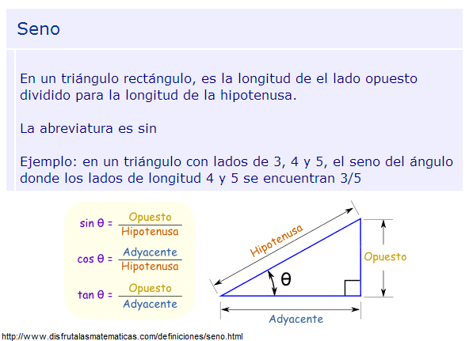

.
Objetivos:
- Aplicar los conocimientos
sobre funciones.
- Reconocer la importancia del
uso de funciones para el diseño de un programa.

Modalidad:

Instrucciones:
- Implementa las siguientes
funciones, recuerda que las funciones se definen antes de la
función del main y del script principal.
-
La función
main()
debe mandar llamar a la función que imprime el menú correspondiente y de
acuerdo a la opción seleccionada por el usuario le dé la
oportunidad de ejecutar cualquiera de las funciones que han sido
construidas. Utiliza el estatuto de control
if. Recuerda que la captura de datos debe ser
realizada en la sección del main. Valida opciones incorrectas.
En el script
principal manda llamar a
la función main.

- La función
kilosLibras(kg) que convierta la
cantidad dada en kilogramos a libras. Equivalencia
1 kg = 2.2 lb.
- La función
librasKilos(lb) que convierta la
cantidad dada en libras a kilogramos.
-
La función
slugsKilos(slugs) que convierta la
cantidad dada en slugs a kilos. Equivalencia
1 slug = 14.56 kg.
-
La función
kilosSlugs(kg) que convierta la
cantidad dada en kilos a slugs.
- La
función unidadesPeso
(),
que despliegue el siguiente menú en pantalla:
.
1.
Kilos - Libras
2.
Libras - Kilos
3.
Slugs - Kilos
4.
Kilos - Slugs
5. Salir
La función
main()
que utilice la función unidadesPeso y de
acuerdo a la opción seleccionada por el usuario mande llamar a la función
correspondiente para calcular las
equivalencias de las unidades de peso. Utiliza el estatuto de control
if. Recuerda que la captura de
datos debe ser realizada en la sección del main. Valida opciones
incorrectas.
En el
script
principal
manda llamar a la función main.
Guarda tu archivo como:
O_Matricula.py.
Construye las funciones para calcular la superficie de cada una de
las siguientes figuras:
- La función
sector(radio, angulo) que recibe el radio y el
ángulo.

- La función
eclipse(a, b)
que recibe los radios a y b.

- La función
paralelogramo(a, h)
que recibe la longitud a y la altura h.

- La
función superficies()
que despliegue el siguiente menú en pantalla:
1.
Sector
2.
Eclipse
3.
Paralelogramo
4. Salir
-
La función
main()
que utilice la función superficies y de
acuerdo a la opción seleccionada por el usuario mande llamar a la función
correspondiente para calcular la
superficie elegida. Utiliza el estatuto de control
if. Recuerda que la captura de
datos debe ser realizada en la sección del main. Valida opciones
incorrectas.
-
En el
script
principal
manda llamar a la función main.
-
Guarda tu archivo como:
O_Matricula.py.
- Considerando la siguiente información:

- La
función seno(hipotenusa, opuesto)
que recibe la longitud de la hipotenusa y del lado
opuesto del triángulo.
- La
función coseno(hipotenusa,
adyacente)
que recibe la longitud de la hipotenusa y del lado
adyacente del
triángulo.
- La
función tangente(adyacente,
opuesto)
que recibe la longitud del lado adyacente y del
lado opuesto del triángulo.
- La
función identidades()
que despliegue el siguiente menú en pantalla:
1.
Seno
2.
Coseno
3. Tangente
4. Salir
La función
main()
que utilice la función identidades y de
acuerdo a la opción seleccionada por el usuario mande llamar a la función
correspondiente para calcular la
identidad trigonométrica elegida. Utiliza el estatuto de control
if. Recuerda que la captura de datos debe ser
realizada en la sección del main. Valida opciones incorrectas.
En el script
principal manda llamar a
la función main.
Guarda tu archivo como:
O_Matricula.py
Comprueba tus resultados:


-
La función
dolaresPesos(dolares)
que recibe la cantidad en dólares y devuelve la cantidad en pesos. Utiliza como
medida de conversión 19.41 pesos por cada dolar.
Casos de prueba:
Input:
Número de opción (1. Dolares a pesos)
Input:
Valor en dolares
Output:
Valor en pesos
|
Input:
1
Input:
1
Output:
19.41
|
Input: 1
Input: -10
Output: -194.1
|
Input:
1
Input: 2
Output:
38.82
|
- La función
costoHotel(noches) que recibe el número de
noches y devuelve el costo total en dólares. Cada noche se cobra en
185.0 dólares.
Casos de prueba:
Input: Número de opción (2.
Costo del hotel)
Input:
Número de noches
Output: Costo total en dólares
|
Input:
2
Input:
1
Output:
185.0
|
Input: 2
Input: 0
Output: 0.0
|
Input: 2
Input:
15
Output: 2775.0
|
- La función
costoViaje(noches, pasajeros) que recibe el número de
noches y el número de pasajeros, y devuelve el costo total del
viaje en pesos. El costo total es la suma de las noches del hotel y
los costos del avión. Manda a llamar todas las funciones que
desarrollaste previamente dentro de esta.
Casos de prueba:
Input: Número de opción (4.
Costo del viaje)
Input:
Número de noches
Input:
Número de pasajeros
Output: Costo total en
pesos
|
Input: 4
Input: 1
Input: 1
Output: 11548.95
|
Input: 4
Input: 3
Input: 0
Output: 10772.55
|
Input: 4
Input: 10
Input: 15
Output: 155280.0
|
Input: 4
Input: 2
Input: 5
Output: 46972.2
|
- La
función menu()
que despliegue el siguiente menú en pantalla:
.
1.
Dolares a pesos
2.
Costo del hotel
3.
Costo del avion
4.
Costo del viaje
5. Salir
-
La función
main()
que utilice la función menu y de
acuerdo a la opción seleccionada por el usuario mande llamar a la función
apropiada de las implementadas anteriormente, para calcular la
operación elegida. Utiliza el estatuto de control
if. Recuerda que la captura de datos debe ser
realizada en la sección del main. Valida las opciones incorrectas.
-
En el
script
principal
manda llamar a la función main.
- Guarda tu archivo como:
O_Matricula.py

Recursos:
6. Funciones

Especificaciones de
entrega en Canvas:
Instrucciones para enviar tus archivos por Canvas:
-
Haz clic en el botón de Tareas.
Haz clic en la actividad de Tarea: Funciones.
-
Haz clic en el botón de Entregar
tarea.
-
En el fólder de Carga del archivo,
haz clic en el botón de Examinar y localiza el
archivo *.py. Si necesitas agregar más archivos, haz clic en
+Agregue otro archivo, haz clic en el botón de
Examinar y localiza el otro archivo *.py.
-
Cuando hayas terminado de subir tus
archivos, haz clic en el botón de Entregar tarea y
listo!!
Especificaciones de
entrega en Vocareum:
|